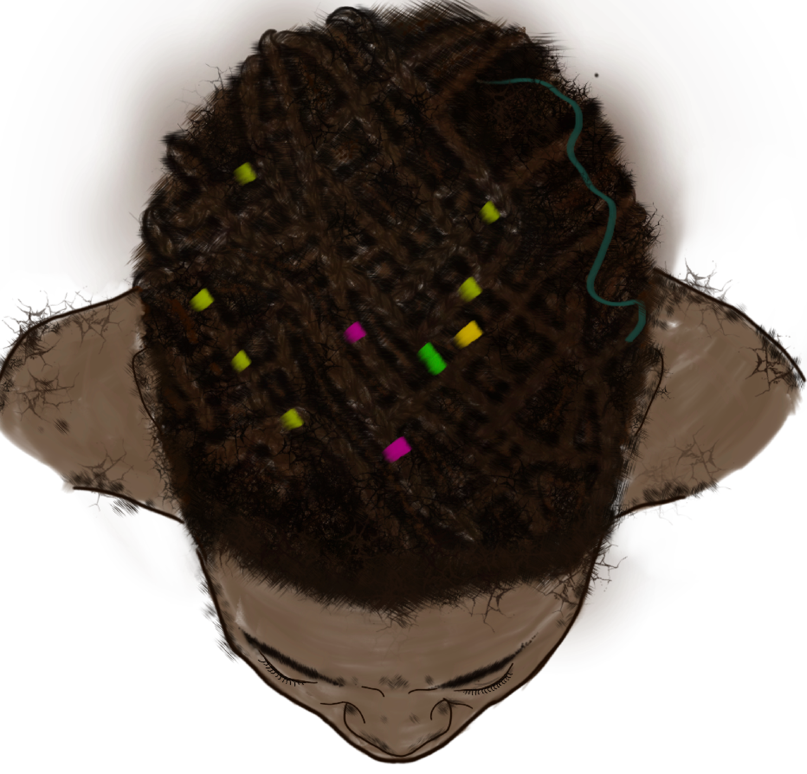
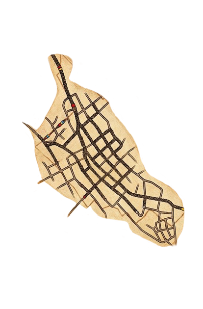

Cartografía
Descubre la geografía y el territorio de San Basilio de Palenque a través de sus mapas históricos. Activa la superposición para revelar el trazado original.
Mapa Base
|
Superposición: Oculta


Haz clic para superponer el mapa histórico sobre la cartografía base
Mapa Base
Representación geográfica del territorio palenquero tal como existe hoy, con sus caminos, ríos y límites actuales.
Superposición Histórica
Capa de pergamino con el trazado cartográfico original, revelando cómo los primeros pobladores entendían y habitaban su territorio.
Calco Interactivo
Al superponer ambos mapas puedes comparar la percepción histórica del espacio con la realidad geográfica contemporánea.